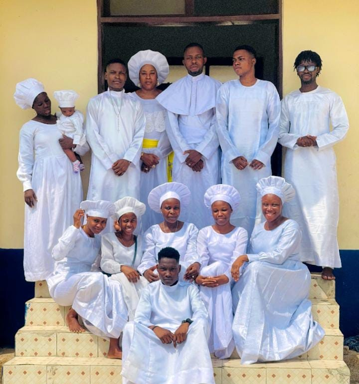

The Heart of Our Church
At Obanikoro Cathedral, we believe that children are a precious gift from God, and we are committed to helping them grow in their faith. Our children's church is designed for kids and teens, and features interactive lessons, games, crafts, and worship.
We are a vibrant and loving community of children, teachers, and families who are passionate about sharing God's love with the next generation. Our children's church is a safe and fun environment where kids can learn about Jesus, make friends, and grow in their faith.
Our mission is to partner with parents and caregivers to raise a generation of children who know, love, and serve Jesus Christ.
The Face Behind Our Children's Ministry
Our Sunday school teachers and mentors are passionate and committed to teaching and guiding our children and sharing God's love with them. They're more than just educators - they're mentors, role models, and caregivers who pour their hearts into helping our kids develop a strong foundation in God's word.
They are the backbone of our children's ministry.

Asst. Leader Olu-aina M. Ayowolemi is a devoted follower of Jesus Christ with a heart for serving children and families. As our Sunday School's Coordinator, he oversees our Sunday school programs, special events, and volunteer team.

We're so grateful for our incredible team of Sunday school teachers! They're dedicated, passionate, and committed to helping our kids grow in their faith.
They pray with them and help them grow in their faith.
We appreciate you more than words can express.
Upcoming events
Join us for our upcoming worship events, whether you're a longtime member or just visiting, we welcome you to join us for this special time of worship and praise.
Sunday School Spotlight
Get ready for an adventure! Our Sunday school activities are packed with games, crafts, and exciting lessons that will help you discover the joy of following Jesus. Join us for interactive and engaging activities that bring the Bible to life!
Gallery →